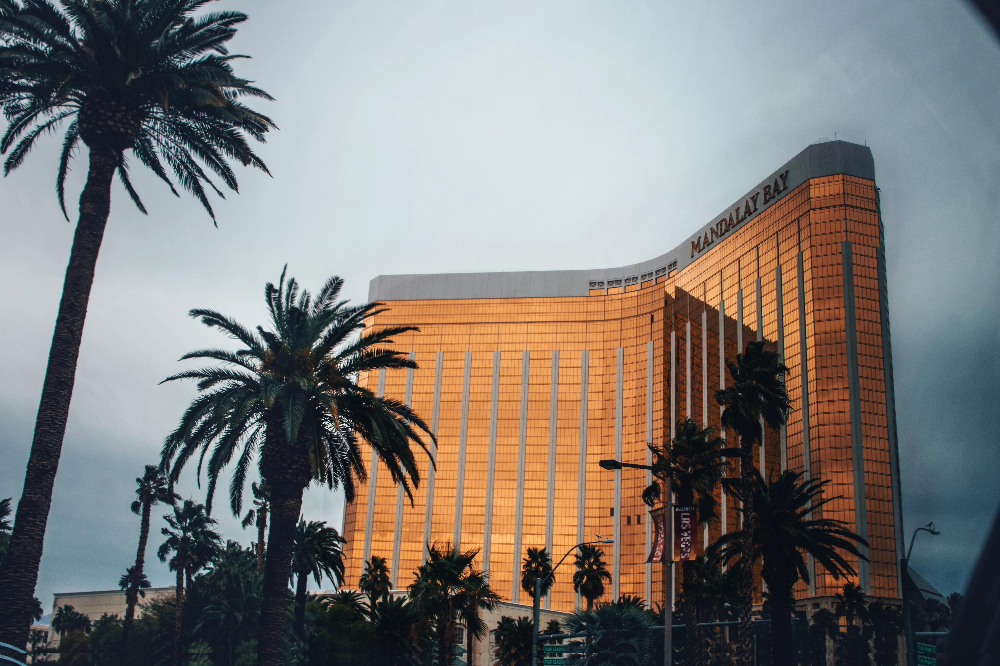

Best Travel Tips

- Best time to visit: Spring (March to May) and Autumn (September to November) for pleasant weather and fewer crowds.
- Explore national parks: Visit over 60 national parks for stunning landscapes and outdoor activities.
- Consider travel insurance: Protect yourself with travel insurance for longer trips or international travel.
- Local customs: Be aware of local customs and etiquette, which can vary significantly from region to region.
- Transportation: Renting a car is recommended for road trips, especially in rural areas.
Best Cuisines and Dining Recommendations

American cuisine is diverse, featuring regional specialties. Popular dishes include:
- Burgers: A quintessential American food, often enjoyed with fries.
- BBQ: Different regions have their own styles, like Texas brisket and Carolina pulled pork.
- New England Clam Chowder: A creamy soup made with clams, potatoes, and onions.
- Chicago Deep-Dish Pizza: A hearty pizza known for its thick crust and generous toppings.
- Tex-Mex: A fusion of Texan and Mexican cuisines, featuring dishes like nachos and fajitas.
Best Accommodation Options
- Hotels: Ranging from luxury to budget options in cities across the country.
- Hostels: Affordable accommodations for backpackers and budget travelers.
- Vacation Rentals: Options like Airbnb for a homely experience.
- Resorts: Full-service properties often located in tourist destinations.
- Campsites: Great for outdoor enthusiasts looking to explore nature.
Best Local Culture and Traditions

- Diversity: The USA is a melting pot of cultures, with influences from around the world.
- Festivals: Numerous festivals celebrate cultural heritage, like Mardi Gras in New Orleans.
- Music: Genres like jazz, blues, country, and rock originated here.
- Sports: American football, basketball, and baseball are popular national pastimes.
- Art: A vibrant arts scene exists, with museums, galleries, and street art in major cities.
Best Top Tourist Attractions

- Grand Canyon: A natural wonder known for its stunning vistas and hiking trails.
- Statue of Liberty: An iconic symbol of freedom located in New York Harbor.
- Yellowstone National Park: Famous for its geysers and hot springs.
- Disneyland: The original theme park in California.
- Washington, D.C.: Home to iconic landmarks like the White House and Lincoln Memorial.
Best Transportation Guides

- Air Travel: Major airports in cities like New York, Los Angeles, and Chicago.
- Road Trips: The extensive Interstate Highway System is perfect for exploring by car.
- Public Transit: Many cities have buses and subways (e.g., NYC Subway).
- Train Travel: Amtrak offers scenic train services across the country.
Best Outdoor Activities and Adventure

- Hiking: Trails in national parks like Yosemite and the Rockies.
- Camping: Opportunities to camp in parks and forests nationwide.
- Water Sports: Kayaking, rafting, and sailing in lakes and rivers.
- Skiing: Ski resorts in states like Colorado and Vermont.
Best Shopping and Souvenirs
- Local Markets: Explore farmers' markets for fresh produce and crafts.
- Malls: Large shopping centers with various stores (e.g., Mall of America).
- Souvenir Shops: Find unique local crafts and memorabilia.
- Outlet Stores: Discounted brand-name items available nationwide.
Best Weather and Time to Visit
The best time to visit depends on the region:
- Spring (March to May): Mild temperatures and blooming flowers.
- Summer (June to August): Warm weather, ideal for outdoor activities.
- Autumn (September to November): Cooler temperatures and beautiful fall foliage.
- Winter (December to February): Cold weather, perfect for skiing in mountain regions.